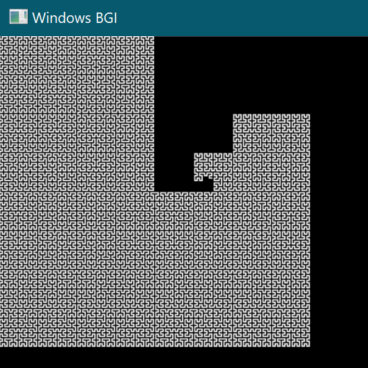
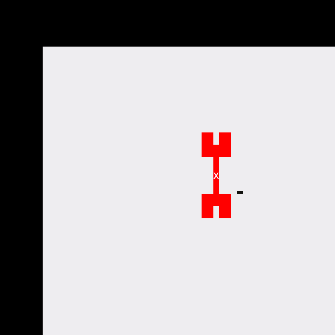

Global
Back to HomePage
Most of these projects have been completely finished and just have occasional changes here and there.
This project is an interesting one. It contains the algorithm
to draw and sort out all the numbers in a mandelbrot set. It colors
it based off of the current number being used. It was written in C++
and is ran through Microsoft Visual Studio.

This project was based for my Random Quote Matrix. It takes the recursive algorithm use in a Hilbert curve and using the Graphic.h library draws it up. It also will ask if you want the coordinates stored on a separate text file incase you want to draw something without the algorithms. This is another C++ project again ran through Visual Studio.
This is a mod developed for Mindustry, a game by Anuke. The game in a brief
description is a tower defense based game, you mine resources and research technology
to build turrets, collect more resources and capture the Planet. The mod created is
suppose to add more support units, and help with supporting other units and the base.
It was hard to decide what category to put this one in. It is the website, and my profile
information. I do not plan to change it once I have fully completed it. Occasionally my
interests will change so I may do it then. I did find a template to help with designing the
website, but a lot of the style is done by me.
This was the Christmas Advent of 2022. All the challenges that I did are listed on the repo
along with more information. It was a fun challenge, and really tested some of my c# coding
skills. My favorite was trying to implement a Dijkstra Path-Finding Algorithm
This was the first game that I decided to build. It was in the console because thats all I
knew how to do at the time. It is really simple, and anyone that knows a bit about programming
could understand it. It uses momentum, 2 paddle objects, a canvas and a ball. I did add a bot
later after I was satisfied and that was fun to make.
This one is kinda self-explanatory. This is a collection of the challenges given to me and my
colleague while we took the C# courses from Udemy. This has helped, and served as a refrence
for some interesting functions, and generally to help me out!
These projects are still in the works and are not finished yet.

If im being totally honest, I don't know if I will ever finish this one. It is a racing game built into the console as well! One of the few of its kind! It is pretty simple, and just colors the console for all the object tracking. It does have a custom track converter once you design it! There are a few difficulties to try, and is pretty hard sometimes!
The original inspiration for this project was my original Random Quote Board, this one is meant for
a 64x64 Matrix that I got off of Adafruit. It has caused a whole bunch of challenges because of the
different style of compiling, but it has been fun to try to do! I still need to add some features for
implementing full screen collision matrixes.
This is another Mindustry mod that I am currently working on. It was at request of a family member
who I play this game with. He asked for some features and I was like "Sure I can do that!" It has some
extras added in, but it is still fun to play around with. Most of the stuff to the included still needs
balancing!